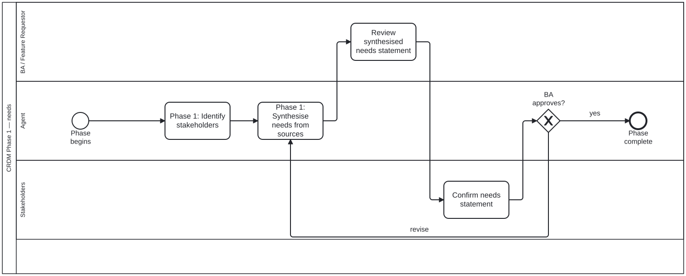

Generated from
cat-harness/processes/process/crdm-needs.bpmnbygen-processes-viz.ts— do not edit here. All processes
Process_CRDM_Needs · strict · 4 step(s)
Identify the stakeholders, synthesise a needs statement from the sources, and loop until the BA and the stakeholders both recognise it. The loop is the phase: a needs statement nobody confirmed is an agent’s summary, not a requirement.

| lane | role | what it does here |
|---|---|---|
| BA / Feature Requestor | business-analyst |
The single review here is what GW_Needs is literally named for — “BA approves?” — even though Lane_Stakeholders’ confirmation sits between this task and that gateway in the flow; the phase’s own documentation makes clear the loop needs both, so reading the gate label alone would miss half of what it takes to exit it. |
| Agent | authoring-agent |
Drafts the needs statement but never decides it is right — A_Synthesise is the sole target when GW_Needs loops back — and this process’s own documentation calls an unconfirmed synthesis “an agent’s summary, not a requirement,” which is exactly what this lane alone produces before the two lanes below it look at it. |
| Stakeholders | stakeholder |
The task itself carries no documentation of its own, so this lane’s entry is the only place recording what “confirm” means in Phase 1: recognising the synthesised needs statement as actually theirs, immediately before the loop gate — not, as in the later data-model phase, judging a cardinality, because there is no model yet to have one. |
Every one of the 4 step(s) is documented.
| step | lane | skill / sub-process | what it does |
|---|---|---|---|
Phase 1: Identify stakeholdersA_Stakeholders |
Agent | crdm-requirements-workflow |
The agent asks the BA who is affected by this change. The BA knows the domain — the agent does not guess. |
Phase 1: Synthesise needs from sourcesA_Synthesise |
Agent | crdm-requirements-workflow |
From the chat, issue, uploads and library sources, write a clear, jargon-free statement of what is needed and why, tied to a concrete workflow. Post it on the GitHub issue, not in chat, and ask the requester and stakeholders to review it. |
Review synthesised needs statementBA_ReviewNeeds |
BA / Feature Requestor | crdm-requirements-workflow |
The BA reviews what the agent synthesised and checks it against what they actually need. |
Confirm needs statementS_ConfirmNeeds |
Stakeholders | — | Stakeholders confirm, on the issue, that the needs statement says what they need — or say what to change. A stakeholder’s judgement; an agent does not record it for them. |
Every one of the 1 decision(s) is documented.
| decision | what decides it | branches |
|---|---|---|
BA approves?GW_Needs |
The BA’s answer to the needs statement. revise goes back to synthesising needs from the sources; yes completes the phase. |
revise → Phase 1: Synthesise needs from sources yes → Phase complete |